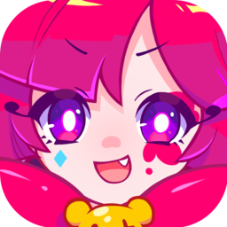 Muse Dash
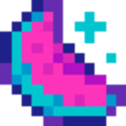 MelonLoader
MDBMSC Editor
Hello Everyone! This website is a tutorial on the Game Muse Dash and specifically the Level Making, a guide treating my experience with charting.
Check MDMC website and MDMC Discord Server to discover those made by the community.
Download Audacity
Download 7-Zip
You can also use WinRar but I don't recommend it cuz it has overcomplicated UI.
1. Batch Select
| Lane | Small | Medium 1 | Medium 2 | Large 1 | Large 2 | Raider | Hammer | Boss Projectile 1 | Boss Projectile 2 | Boss Projectile 3 | Boss |
|---|---|---|---|---|---|---|---|---|---|---|---|
| A I R |
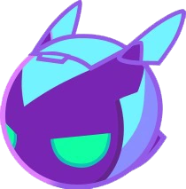 | 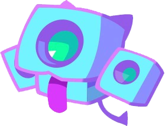 | 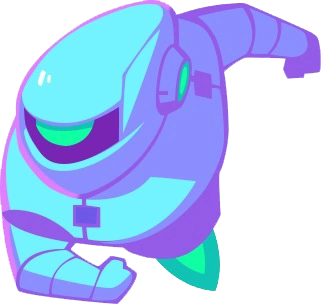 | 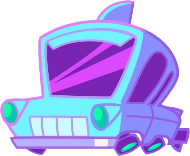 | .png) |
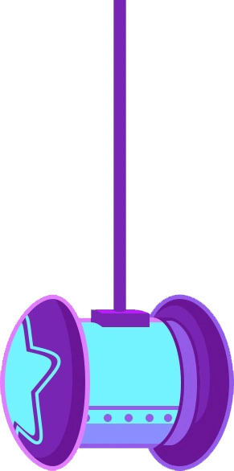 | .png) |
.png) |
.png) |
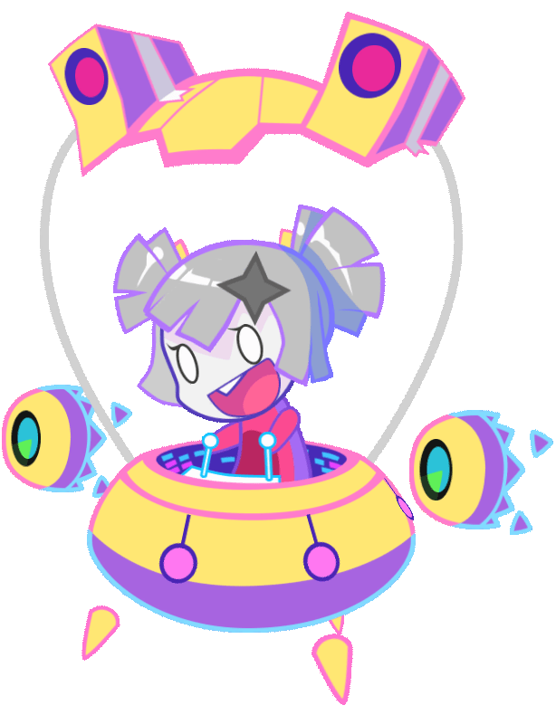 | |
| G R N D |
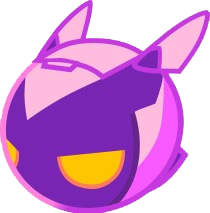 | 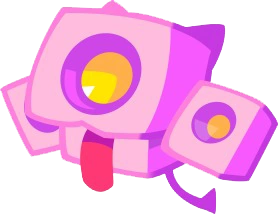 | 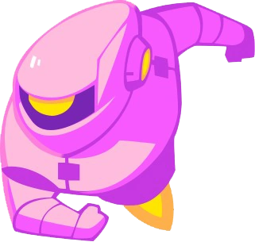 | 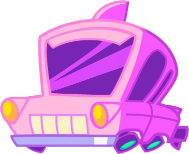 | 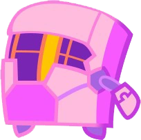 | 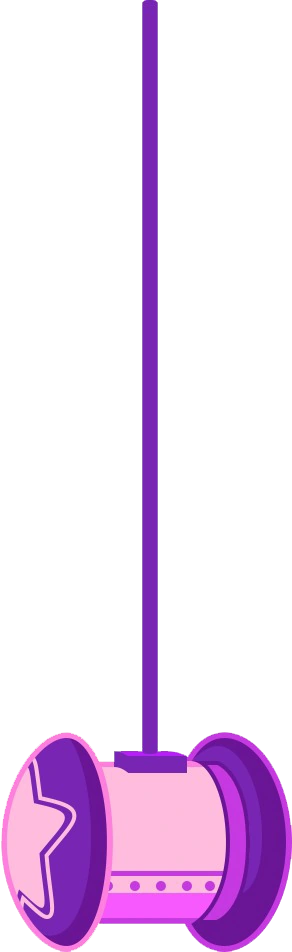 | .png) |
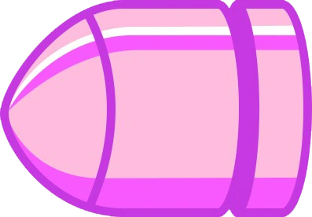 | .png) |
| Lane | Small | Medium 1 | Medium 2 | Large 1 | Large 2 | Raider | Hammer | Boss Projectile 1 | Boss Projectile 2 | Boss Projectile 3 | Boss |
|---|---|---|---|---|---|---|---|---|---|---|---|
| A I R |
.png) |
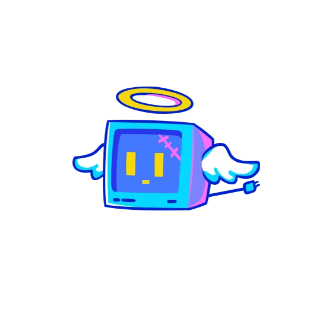 | 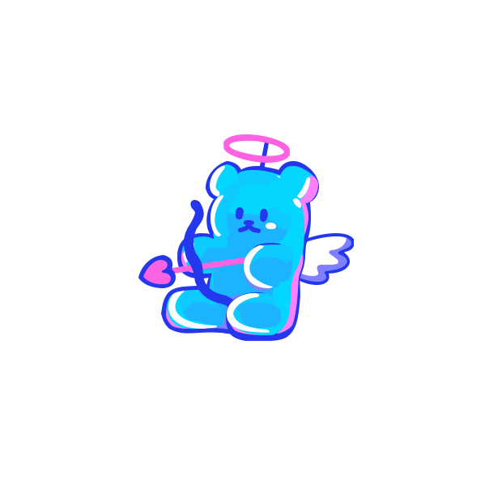 | 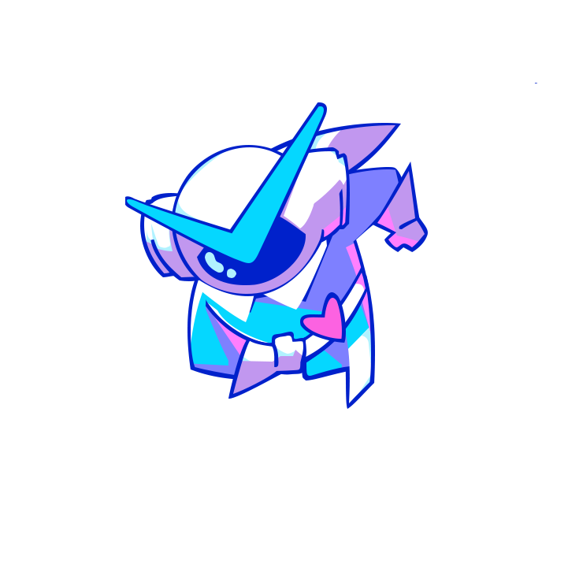 | 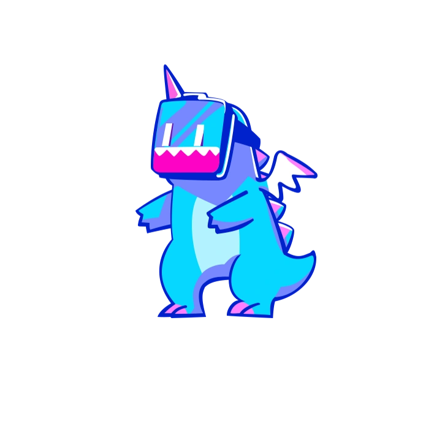 | .png) |
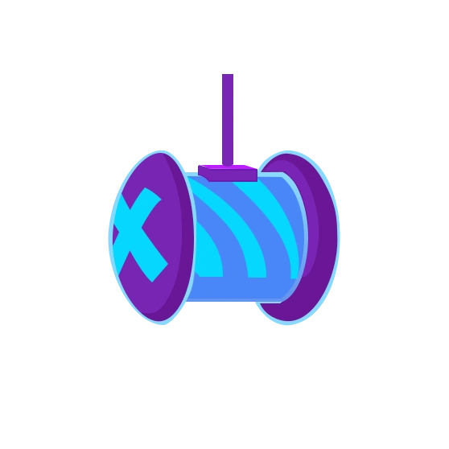 | 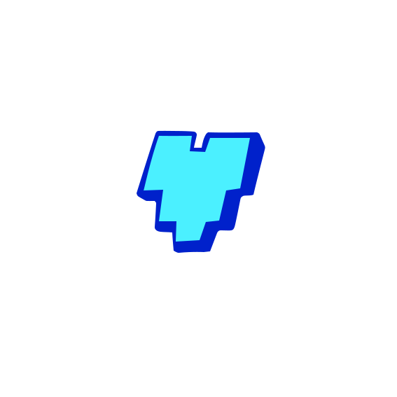 | .png) |
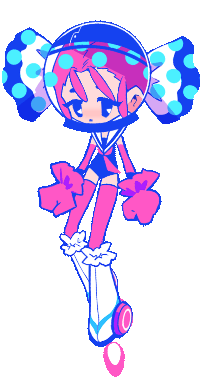 | |
| G R N D |
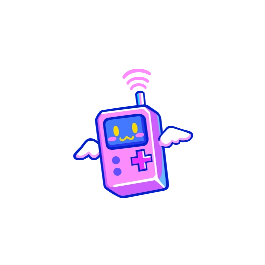 | 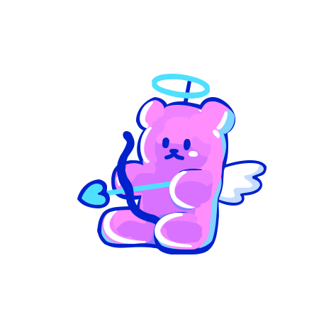 | 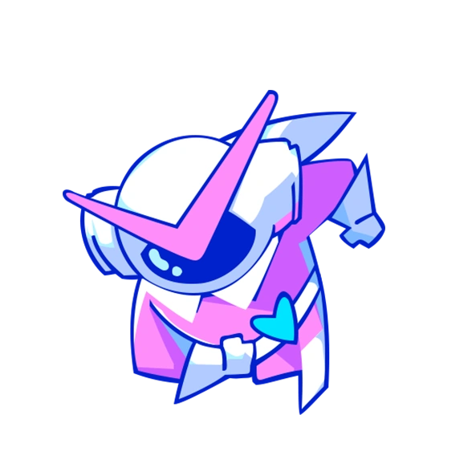 | 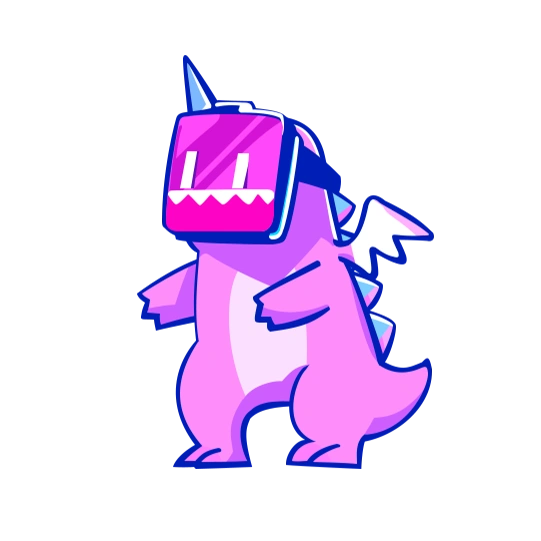 | 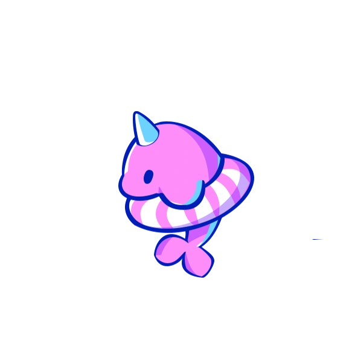 | 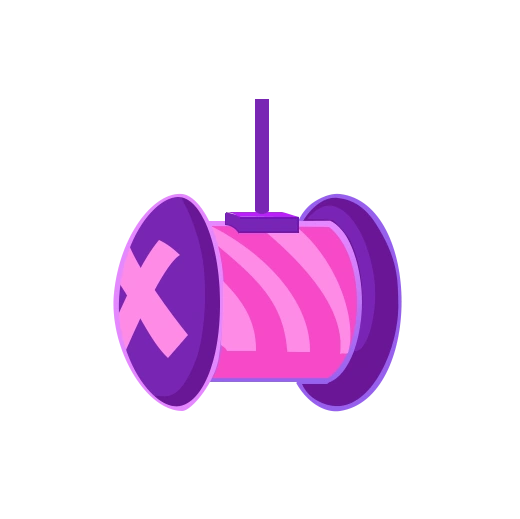 | 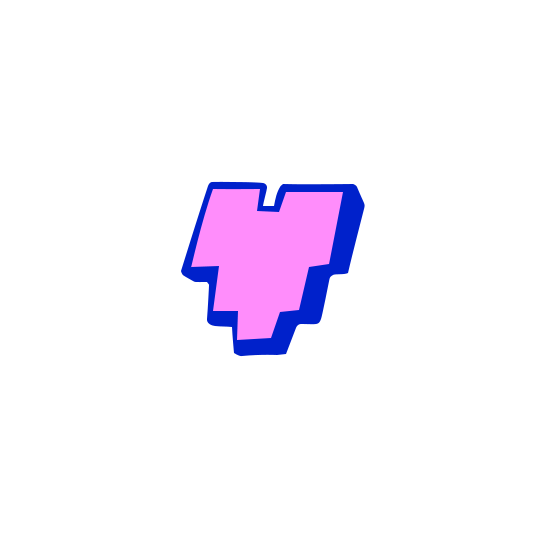 | 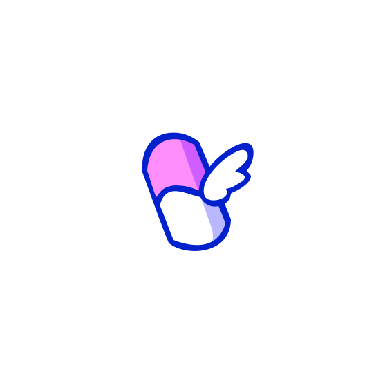 | 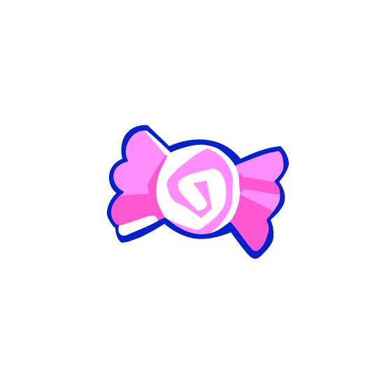 |
| Lane | Small | Medium 1 | Medium 2 | Large 1 | Large 2 | Raider | Hammer | Boss Projectile 1 | Boss Projectile 2 | Boss Projectile 3 | Boss |
|---|---|---|---|---|---|---|---|---|---|---|---|
| A I R |
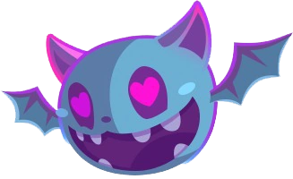 | 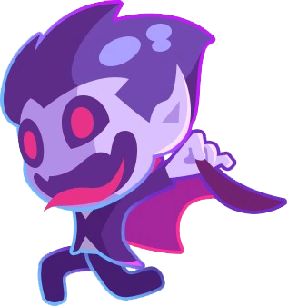 | 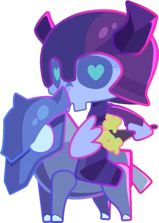 | 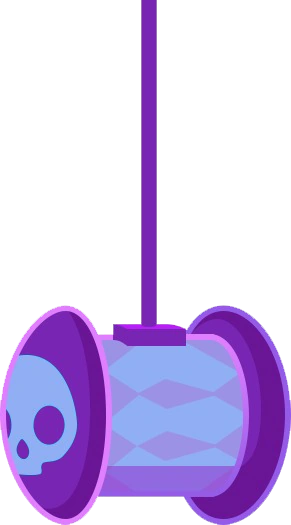 | .png) |
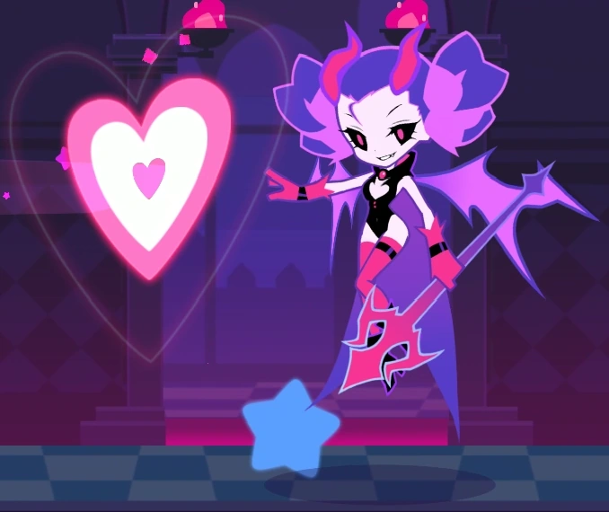 | |||||
| G R N D |
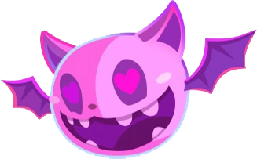 | 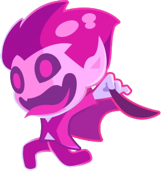 | 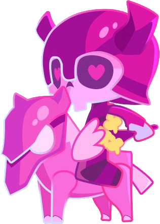 | .png) |
.png) |
| Lane | Small | Medium 1 | Medium 2 | Large 1 | Large 2 | Raider | Hammer | Boss Projectile 1 | Boss Projectile 2 | Boss Projectile 3 | Boss |
|---|---|---|---|---|---|---|---|---|---|---|---|
| A I R |
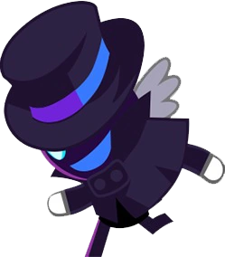 | 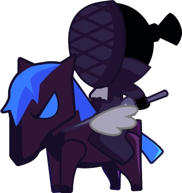 | 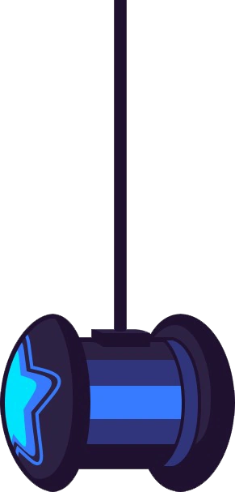 | 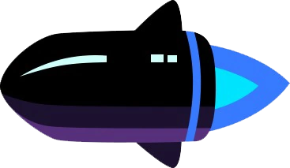 | .png) |
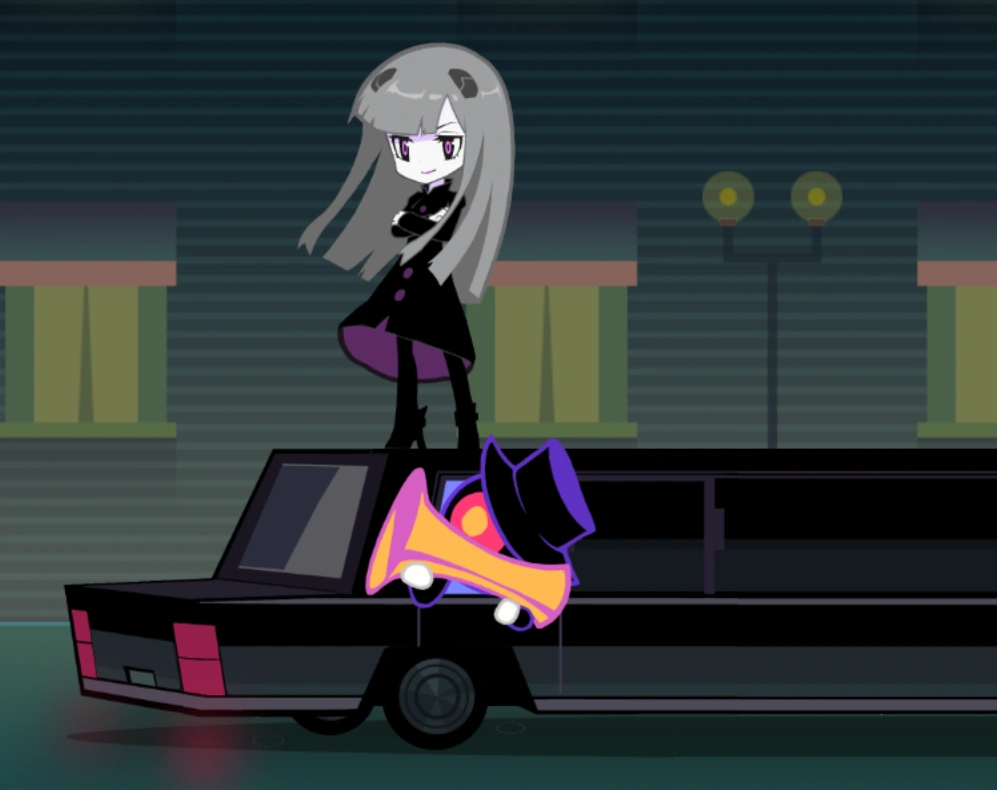 | |||||
| G R N D |
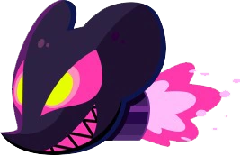 | 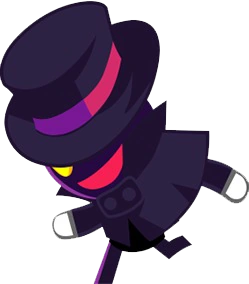 | 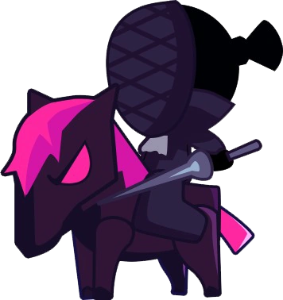 | 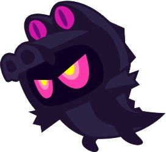 | 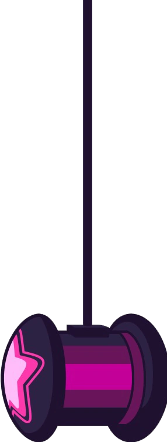 | 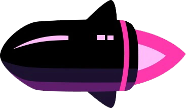 | .png) |
| Lane | Small | Medium 1 | Medium 2 | Large 1 | Large 2 | Raider | Hammer | Boss Projectile 1 | Boss Projectile 2 | Boss Projectile 3 | Boss |
|---|---|---|---|---|---|---|---|---|---|---|---|
| A I R |
|||||||||||
| G R N D |
| Lane | Small | Medium 1 | Medium 2 | Large 1 | Large 2 | Raider | Hammer | Boss Projectile 1 | Boss Projectile 2 | Boss Projectile 3 | Boss |
|---|---|---|---|---|---|---|---|---|---|---|---|
| A I R |
.png) |
.png) |
|||||||||
| G R N D |
.png) |
| Lane | Small | Medium 1 | Medium 2 | Large 1 | Large 2 | Raider | Hammer | Boss Projectile 1 | Boss Projectile 2 | Boss Projectile 3 | Boss |
|---|---|---|---|---|---|---|---|---|---|---|---|
| A I R |
.png) |
.png) |
.png) |
.png) |
.png) |
.png) |
.png) |
.png) |
.png) |
.png) |
 |
| G R N D |
.png) |
.png) |
.png) |
.png) |
.png) |
.png) |
.png) |
.png) |
.png) |
.png) |
| Lane | Small | Medium 1 | Medium 2 | Large 1 | Large 2 | Raider | Hammer | Boss Projectile 1 | Boss Projectile 2 | Boss Projectile 3 | Boss |
|---|---|---|---|---|---|---|---|---|---|---|---|
| A I R |
.png) |
.png) |
|||||||||
| G R N D |
.png) |
.png) |
.png) |
.png) |
| Lane | Small | Medium 1 | Medium 2 | Large 1 | Large 2 | Raider | Hammer | Boss Projectile 1 | Boss Projectile 2 | Boss Projectile 3 | Boss |
|---|---|---|---|---|---|---|---|---|---|---|---|
| A I R |
.png) |
.png) |
.png) |
.png) |
.png) |
.png) |
.png) |
.png) |
.png) |
||
| G R N D |
.png) |
.png) |
.png) |
.png) |
.png) |
.png) |
.png) |
.png) |
.png) |
.png) |
Scene ID: 01
Genre: Electronic, EDM, Techno, Mix, Hardstyle, House
Energy: Twilight Inside
Difficulty Peak: 13
Tags:
Machine, Industry, High Tech, Modern, Cybernetic, Device, Computer, Enginery, Mecha, Science, Automation
Scene ID: 02
Genre: Lofi, Future, Glitch
Energy: Twilight Outside
Difficulty Peak: 10
Tags:
Street, Pixel, Relax, Regulated Mood, Sleep, Soft, Chill, Minimal, Nostalgic, Slow, Wavy, Smooth
Scene ID: 03
Genre: Rock, Metal, Gothic, Epic, Orchestral, Dubstep, Trance, Speedcore
Energy: Dark Inside
Difficulty Peak: 13
Tags:
Death, Depression, Piano, Heroic, Mythical, Middle Age, Shadow, Devil, Demon, Flame, Brutal, Nightmare
Scene ID: 04
Genre: Jazz, Rap, Acoustic
Energy: Dark Outside
Difficulty Peak: 11
Tags:
Street, Piano, Urban, Sexual, Car, City, Walk, Loneliness, Erotic, Luxury,
Scene ID: 05
Genre: Happy
Energy: Bright Outside
Difficulty Peak: 12
Tags:
Cheering, Positive, Joyful, Utopia, Sugar, Smile, Pleasant, Sparkling, Sunny
Scene ID: 06
Genre: Hogaku(Traditional Japanese)
Energy: Twilight Outside
Difficulty Peak: 12
Tags:
Eastern, Japanese, Cultural, Architecture, Wood,
Scene ID: 07
Genre: Video Game
Energy: Bright Outside
Difficulty Peak: 12
Tags:
Collab, Futuristic, Park, Arcade

Scene ID: 08
Genre: Touhou, Fantasy
Energy: Twilight Outside
Difficulty Peak: 12
Tags:
Forest, Magic, Nature, Eastern,
Scene ID: 09
Genre: Cartoon
Energy: Twilight Outside
Difficulty Peak: 12
Tags:
Collab,
Scene ID: 10
Genre: Vocaloid
Energy: Bright Inside
Difficulty Peak: 12
Tags:
Collab, Idol, Show, Live, Fans, Action, Event, Virtual
Scene ID: 11?
Genre: Troll
Energy: -
Difficulty Peak: -
Tags:
Unusable, Special, Uncommon
Scene ID: 12?
Genre: Guoyue(Traditional Chinese)
Energy: Bright Outside
Difficulty Peak: ?
Tags:
Eastern
Lowest to Highest by Impact Power


{Medium 1} {Large 1} {Raider} and {Projectile 2} as married couple Males ♂

{Medium 2} {Large 2} {Hammer} and {Projectile 3} as married couple Females ♀

{Small} {Hold} {Projectile 1} {Ghost} {Gemini} {Masher} as assisted Kids Hermaphroditic or Transgender ⚧

1st and 2nd groups consist of note types Wombo Combos, it can progress at a different scale depending on the length, however they aren't stuck in prisonners walls
3rd group consist of miscellaneous useful types, lighten stream visually, slice as a mini part on its own, and also doing well a celibate
The ground lane should in most cases be a little bit more dominant than the air lane by like 10-15% in term of stuff
Ground and air Lanes are also available for effects perfect timestamp position, boss mashers and melees can as well be on boss lane but not air though
I’am gonna use the vertical view which was the only one at the old times from the genesis


Note that we are talking about the bars on when to change lane and not necessarely on actual beats We can also multiply the scale of those values by 2. For example {4-4} can be {8-8} in some extent so that litteraly mean each measure own completely the content. In the negative multiplication which imply streams impairs values are flawed. 1 can't be 0.5 since we always deal in integer numbers. the grid is supposed to be 16/4 but i'am talking like it's 8/4 which is more simpler to image lane swap. So i could write it that way {4-1-3 S} S for stream and {8-8} being {4-4 C} C for complete, entire measure so to speak.
Gemini at half are better fitting on passive pair and dynamic impair, not a random fact they exactly reverse mirror at middle which cover good symmetry. That's for the structure quadruples turning triples which for the most part are aligned or triangled (linear or accent).
Linear Version
Triangular Version
Most of the time holds works on Pairs arrangements
Long Length
Medium Length
Short Legth
Directions concern Smalls and Mediums,
As well as eventually [Raiders] and [Hammers] although they are fixed types.
[Raider] is animated down to up and [Hammer] up to down, reversal are a special case 97% not to be used.
Directions contain a difficulty value at reading!
| Lane | No Direction | Ease | Cross | All Up | All Down | Creative |
|---|---|---|---|---|---|---|
| AIR | ⇨ | ⇩ | ⇧ | ⇧ | ⇩ | ? |
| GRND | ⇨ | ⇧ | ⇩ | ⇧ | ⇩ | ? |
Ctrl+R is a shortcut to reverse the selected stuff [ground to air] and [air to ground].
An impair value lane use result to a lane swap for the next section.
The lane swap for Pair Passive Impair Dynamic is done 2 times earlier, 4 times for Pair Dynamic.
We can count {Impair Passive} and {Pair Passive-Dynamic/Dynamic-Passive} as having this property but we can also mix up to able a total of 4x4 options.
Basically it's one of the half measure consisting of a main lane and swapping to another with a balanced pair dynamic.
If a measure main lane is A it goes like this:
| 1st Half Measure | 2nd Half Measure | |
|---|---|---|
| BB | ||
| AAAA | AA | |
| Passive Pair | Dynamic Pair | |
| 1st Half Measure | 2nd Half Measure | |||
|---|---|---|---|---|
| B | BB | |||
| AA | A | AA | ||
| Impair Dynamic | Dynamic Pair | |||
The followed example consist of 3 or 5 lane variation units which cover a good proportion to be between zig zags and single laning.
Make sure the final note is at the same lane during the last section measure!
By the way, geminis are considered "laneless" for its undecisive lane favorism and can cover loners notes.
A long masher can personnally be considered as a full measure long.
I consider their ability to reset lane change making pure symmetry unconsequencial although that's only true if the next section isn't a repeating one.
In the process of beats placement, we encounter 4 grid values with each synchronizing perfectly with bold bars. We can double or quadruples even more but that's for effects, beside them no other grid is used.
| Grid | Barpoints | Multiples | Usage Rate |
|---|---|---|---|
| 12 | {3} | 24÷2 | #2 Casual |
| 16 | {4} | 32÷2 | #1 Standard |
| 24 | {6} | 12x2 | #3 Rare |
| 32 | {8} | 16x2 | #4 Uncommon |

Gemini is a double tap from the 2 lanes [air] and [grnd] fractionner, a good way to imply a transitive mirror.
By Fake I mean the same double tap principle but with different note type which can be more wild, theses have different properties and may varies in positions.
The Hold in the air is the default lane for this note although this could be to debate with context.
Why ? Cuz the main lane is where it's the most active and the current tap notes would mean to be on the ground.
An [air hold] end tail makes you fall instantly to the ground but with late click
With [grnd hold] end tail + [air ennemy] physics can makes you jump attack so placing a gear just after is issued.
Holds are versatiles and play a major role on each part being different from others as being one of the most creative note cuz they have a unique property, they can signature pretty much all sections but not being mixed up with bad spacing, though they are many type of them. They are almost always followed by a tap note on the end tail at the opposite lane. There are several types of holds arrangement.


Masher on the ground lane is waiting for you.
Masher on the air lane is coming for you.
Masher tail should be spaced by one bold bar long especially for high BPM
The Counter might be oscillating in game cuz of FPS drops
| Max Hit Count | 1 Hit | 2 Hits | 3 Hits | 4 Hits | 5 Hits | 6 Hits | 7 Hits | 8 Hits | 9 Hits | 10 Hits |
|---|---|---|---|---|---|---|---|---|---|---|
| Second Length | 0.00 ~ 0.08 | 0.09 ~ 0.11 | 0.12 ~ 0.16 | 0.17 ~ 0.19 | 0.20 ~ 0.24 | 0.25 ~ 0.27 | 0.28 ~ 0.31 | 0.32 ~ 0.37 | 0.38 ~ 0.39 | 0.40 ~ 0.45 |
Section difficulties should feet the song intensity and the target difficulty.
The start of a chart shouldn't be the hardest part even if the opening of the song is rough.
If a transition part happen to be somewhere at a 4th measure, it's often subject to a pattern buff.
| Opening | Introduction | Middle | Transition | Ending | ||
|---|---|---|---|---|---|---|
| Nothing - Blue Note - Gear - Long Hold | Small - Mediums | Mediums - Larges | Projectiles - Mediums - Larges - Raider/Hammers - Gemini(Little) | Nothing - Blue Note - Small - Gear - Long Hold | Projectile - Small - Mediums - Larges - Raider - Hammer - Gemini | Nothing - Gear - Long Hold |
| Break | Easy | Normal | Hard (Boss Phase 2) | Break/Easy | Insane(Boss Phase 1) | Break/Easy |
Polyrhythm consist of theming instruments beats with a specific lane and note type.
It's a sort of ruling structure following 2 to 4 tracks at the same time.
This type of charting imply a significant number of double taps.
| Difficulty | 1-8★ | 9★ | 10★ | 11-12★ |
|---|---|---|---|---|
| Appearance | No | Minor | Average | Major |
Boss projectiles 1/2&3 are used separately unless its a special section.
Melee and Mashers have an implicit Forward animation.
It's same with projectiles cuz as they spawn and move until tap there is an interval.
They can conflict with each other and produce unreadable glitches.
| Boss Note | Entrance | Exit | [Ready/End] Phase [1/2] | Melee 1, Masher [1/2] | Melee 2 |
|---|---|---|---|---|---|
| Max Second Length | Scene Dependance | Scene Dependance | ~O.8-1~ | ~1.3-1.5~ | 0.3~0.5 |
| Bars Values | 2 Bold Bars 4 Bold Bars | 2/4 Bold Bars | 2 Bold Bars 4 Bold Bars | 2 Bold Bars 4 Bold Bars | 2 Bold Bars |
Here are some ways to overlap: